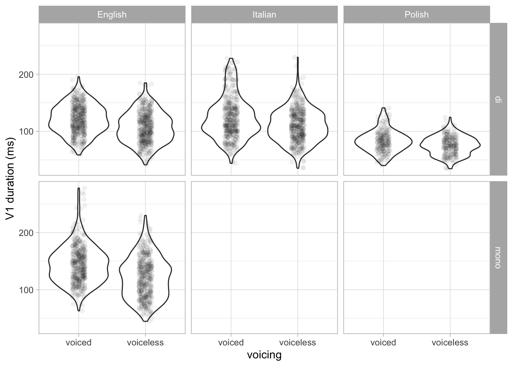
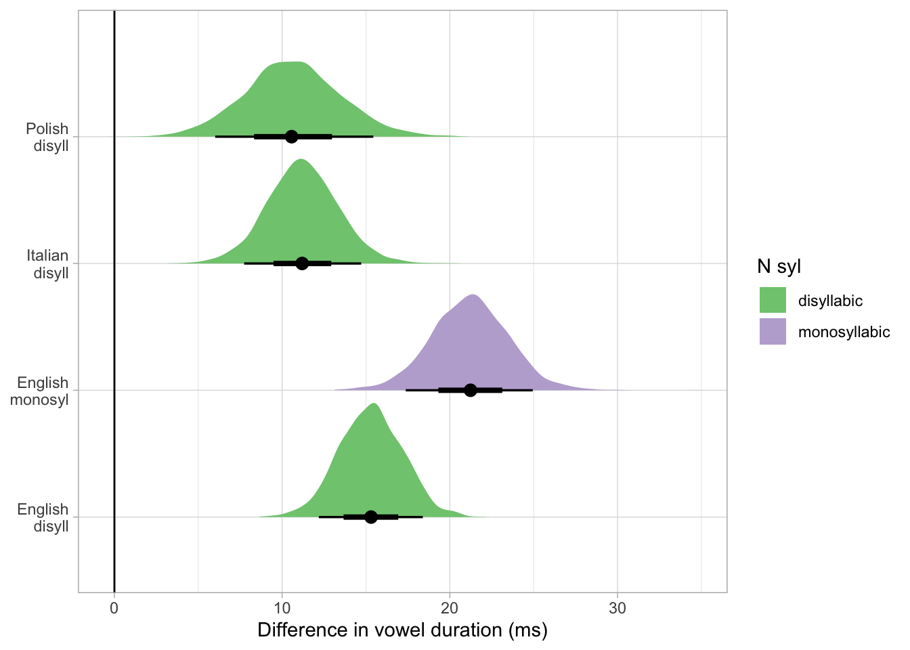

library(tidyverse)
theme_set(theme_light())
library(cmdstanr)
library(brms)
library(posterior)
library(coretta2018itapol)
library(coretta2019eng)
library(ggdist)02-modelling
1 Read data
In this file, we model the actual data from Coretta (2019) using the model tested in Simulate. The data is part of two R packages:
The data comes from two studies run as part of my PhD (https://stefanocoretta.github.io/phd-thesis/). Note that the studies were run separately and in sequence, so that cross-linguistic comparison was only an objective in the Italian/Polish data but not across English. This means that while Italian and Polish have data from phonologically comparable contexts, English uses different contexts.
The following code loads the relevant data from the two packages and joins the data into a single tibble ipe.
data("token_measures")
data("eng_durations")
itapol <- token_measures |>
dplyr::select(speaker, v1_duration, voicing = c2_phonation, language, speech_rate) |>
mutate(
num_syl = "di",
rate = (speech_rate - mean(speech_rate, na.rm = TRUE)) / sd(speech_rate, na.rm = TRUE)
)
eng <- eng_durations |>
dplyr::select(speaker, v1_duration, voicing, num_syl, speech_rate) |>
mutate(
language = "English",
rate = (speech_rate - mean(speech_rate, na.rm = TRUE)) / sd(speech_rate, na.rm = TRUE)
)
ipe <- bind_rows(itapol, eng) |>
drop_na(v1_duration)Here’s a breakdown of number of participants per language.
ipe |>
distinct(language, speaker) |>
count(language)Participants read target words in frame sentences (the target word was in broad focus). The target words were:
Italian and Polish: ˈC1VC2V where C1 is /p/ and C2 is one of /t, k, d, ɡ/ and V is one of /a, o, u/ (pata, pada, poto, podo, …).
English: ˈtVC2(əs) where V is one of /iː, ɜː, ɑː/ and C2 is one of /p, k, b, ɡ/ to form disyllabic and monosyllabic words (teepus, teebus, teep, teeb, …).
Given that the design is not fully crossed for all languages in terms of consonant place and vowels, the current analysis focuses on average voicing effects (across vowels and places).
Here is a breakdown of number of observations per voicing \(\times\) number of syllables (only English has mono- and disyllabic data):
table(ipe$voicing, ipe$language, ipe$num_syl), , = di
English Italian Polish
voiced 450 443 228
voiceless 450 443 228
, , = mono
English Italian Polish
voiced 450 0 0
voiceless 450 0 02 Plot data
ipe |>
ggplot(aes(voicing, v1_duration)) +
geom_violin() +
geom_jitter(alpha = 0.05, width = 0.1) +
facet_grid(cols = vars(language), rows = vars(num_syl)) +
labs(y = "V1 duration (ms)")
3 Model data
We will model the data using the same model tested in Simulate. First we create a list object with the data.
ipe_dat <- list(
N = nrow(ipe),
P = length(unique(ipe$speaker)),
L = 3,
y = log(ipe$v1_duration),
# voiceless = 0, voiced = 1
voicing = as.numeric(factor(ipe$voicing, levels = c("voiceless", "voiced"))) - 1,
rate = ipe$rate,
# di = 0 and mono = 1
syllables = as.numeric(as.numeric(factor(ipe$num_syl, levels = c("mono", "di"))) == 1),
participant = as.numeric(as.factor(ipe$speaker)),
language = as.numeric(as.factor(ipe$language))
)We compile the model as needed.
bm_1_mod <- cmdstan_model("scripts/bm-1.stan")bm_1_fit_file <- "data/cache/bm_1_fit.rds"
if (file.exists(bm_1_fit_file)) {
bm_1_fit <- readRDS(bm_1_fit_file)
} else {
bm_1_fit <- bm_1_mod$sample(
data = ipe_dat,
seed = 2183,
chains = 4, parallel_chains = 4,
# ~1-2% divergent transitions, increase adapt delta
adapt_delta = 0.99,
# 7 transitions hit max treedepth, increase
max_treedepth = 15
)
saveRDS(bm_1_fit, bm_1_fit_file)
}The model summary.
bm_1_summary <- bm_1_fit$summary(variables = c("intercept", "b_voicing", "b_syllables_en", "b_voicing_syllables_en", "b_rate")) |>
mutate(
across(where(is.numeric), ~round(.x, 2))
)
bm_1_summarybm_1_draws <- bm_1_fit$draws(
c("intercept", "b_voicing", "b_syllables_en", "b_voicing_syllables_en", "b_rate", "r_participant", "corr_participant")
) |> as_draws_df()The following code obtains draws for the effect of voicing on vowel duration (voiced - voiceless) in Italian, Polish and English disyllabic words and in English monosyllabic words.
voi_draws <- bm_1_draws |>
select(en_di = `b_voicing[1]`, it_di = `b_voicing[2]`, po_di = `b_voicing[3]`, b_voicing_syllables_en) |>
mutate(
en_mono = en_di + b_voicing_syllables_en
) |>
select(-b_voicing_syllables_en) |>
pivot_longer(everything()) |>
mutate(
language = case_when(
str_detect(name, "en") ~ "English",
str_detect(name, "it") ~ "Italian",
str_detect(name, "po") ~ "Polish"
),
n_syl = case_when(
str_detect(name, "di") ~ "disyllabic",
str_detect(name, "mono") ~ "monosyllabic"
)
)We can plot the expected difference in vowel duration.
voi_draws |>
ggplot(aes(100 * exp(value) - 100, name)) +
geom_vline(xintercept = 0) +
stat_halfeye(.width = c(0.6, 0.9), aes(fill = n_syl)) +
scale_y_discrete(labels = c("English\ndisyll", "English\nmonosyl", "Italian\ndisyll", "Polish\ndisyll")) +
labs(
x = "Difference in vowel duration (ms)", y = NULL,
fill = "N syl"
) +
scale_fill_brewer(type = "qual")
ggsave("img/ve-comp.png", width = 7, height = 4)
The following calculates ratios between vowels followed by voiced stops and vowels followed by voiceless stops. A ratio of 1 means no difference in duration, ratios greater than 1 means vowels in the voiced condition are longer and ratios smaller than 1 mean vowels in the voiced condition are shorter. We get the 90% and 70% CrIs.
bm_1_ratios <- bm_1_draws |>
select(en_di = `b_voicing[1]`, it_di = `b_voicing[2]`, po_di = `b_voicing[3]`, b_voicing_syllables_en) |>
mutate(
en_mono = en_di + b_voicing_syllables_en
) |>
select(-b_voicing_syllables_en) |>
mutate(
across(everything(), exp),
)
bm_1_ratios |>
pivot_longer(everything()) |>
group_by(name) |>
summarise(
q05 = quantile2(value, probs = 0.05) |> round(2),
q95 = quantile2(value, probs = 0.95) |> round(2),
q15 = quantile2(value, probs = 0.15) |> round(2),
q85 = quantile2(value, probs = 0.85) |> round(2),
)Finally we compare the ratios between the different language/syllable conditions.
bm_1_ratios |>
mutate(
d_po_it = po_di - it_di,
d_en_mono_di = en_mono - en_di,
d_it_en_di = it_di - en_di,
d_po_en_di = po_di - en_di
) |>
select(d_po_it:d_po_en_di) |>
pivot_longer(everything()) |>
group_by(name) |>
summarise(
q05 = quantile2(value, probs = 0.05) |> round(2),
q95 = quantile2(value, probs = 0.95) |> round(2),
q15 = quantile2(value, probs = 0.15) |> round(2),
q85 = quantile2(value, probs = 0.85) |> round(2),
)At 90% probability, the difference in ratio for English mono- vs disyllabic words is 0.02 to 0.1, for English vs Italian disyllabic words the difference is -0.09 to +0.01 and so on. At 70% probability, the difference in ratio suggests that Italian and Polish have a possibly similar voicing effect (or if different, that the difference is relatively smaller), while their effect is smaller than English (disyllabic and monosyllabic words), and finally that the effect is larger in mono than in disyllabic words in English. The 70% CrI are relatively wide so it is not possible at this stage to confidently estimate the magnitude of the differences.
References
Coretta, Stefano. 2018. An Exploratory Study of the Voicing Effect in Italian and Polish. https://doi.org/10.17605/OSF.IO/XQ8K3.
Coretta, Stefano. 2019. Compensatory Aspects of the Effect of Voicing on Vowel Duration in English [Research Compendium]. https://doi.org/10.17605/OSF.IO/2M39U.